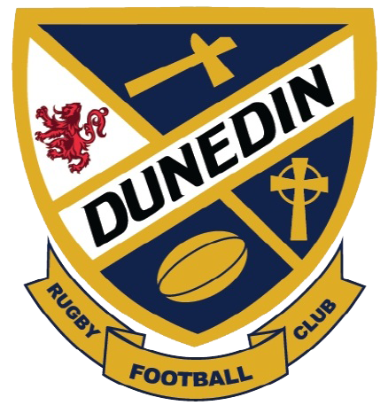
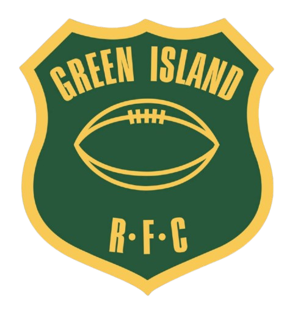

Dunedin Sharks
Green Island Grizzlies| # | Team | League | City | Country | P | W | D | L | Form | Rating |
|---|---|---|---|---|---|---|---|---|---|---|
| 1 | ORFU Gallaway trophy | Dunedin | New Zealand | 16 | 11 | 0 | 5 | 1609.7 | ||
| 2 |  Dunedin Sharks | ORFU Gallaway trophy | Dunedin | New Zealand | 13 | 9 | 0 | 4 | 1560.4 | |
| 3 | ORFU Gallaway trophy | Dunedin | New Zealand | 15 | 10 | 0 | 5 | 1551.6 | ||
| 4 | ORFU Gallaway trophy | Dunedin | New Zealand | 14 | 8 | 0 | 6 | 1539.9 | ||
| 5 | ORFU Gallaway trophy | Dunedin | New Zealand | 15 | 9 | 0 | 6 | 1526.1 | ||
| 6 | ORFU Gallaway trophy | Dunedin | New Zealand | 13 | 7 | 0 | 6 | 1522.1 | ||
| 7 |  Green Island Grizzlies | ORFU Gallaway trophy | Dunedin | New Zealand | 13 | 6 | 0 | 7 | 1476.2 | |
| 8 | ORFU Gallaway trophy | Dunedin | New Zealand | 12 | 1 | 0 | 11 | 1368.7 | ||
| 9 | ORFU Gallaway trophy | Dunedin | New Zealand | 13 | 1 | 0 | 12 | 1345.3 |